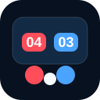

Два окна
Оператор управляет матчем, табло остается read-only для судей, зрителей и спортсменов.
Desktop scorer для соревнований по бочча
Счетчик для корта: оператор ведет матч, второе окно показывает крупное табло, а результаты сохраняются локально даже без сети.

Оператор управляет матчем, табло остается read-only для судей, зрителей и спортсменов.
Отдельное время красной и синей стороны, разминка, сбор мячей и быстрые действия.
Матч можно начать по классу и вести без сервера, игроков, этапа и кода завершения.
Завершенные матчи сохраняются локально и остаются доступны после перезапуска.
Если сеть вернется позже, результаты можно отправить на сервер из очереди.
macOS сборка подписывается Developer ID. Windows сборка пока без подписи, поэтому SmartScreen может показать предупреждение. Linux доступен как AppImage.
Открыть последний релиз